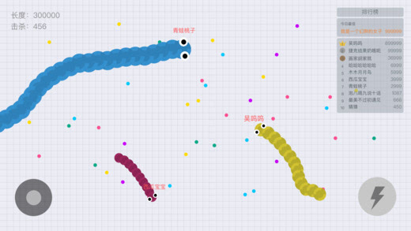
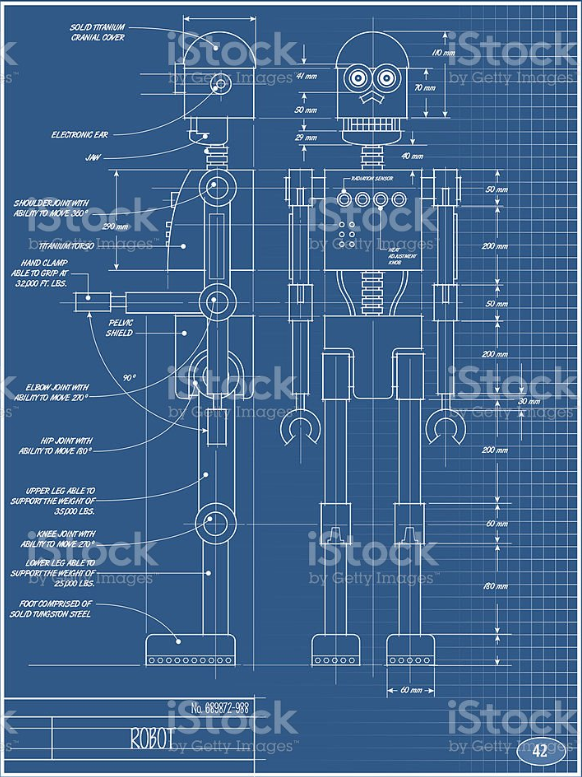
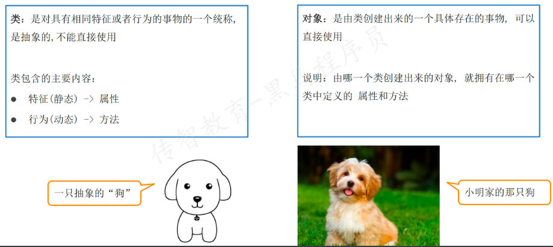

<!DOCTYPE lake>
<h2 data-lake-id="oZWpY" data-lake-index-type="2" id="oZWpY"><span data-lake-id="uef8f2576" id="uef8f2576">面向对象和面向过程思想</span></h2><p data-lake-id="ue9600ce4" id="ue9600ce4"><strong><span data-lake-id="u6ac743fc" id="u6ac743fc">面向对象</span></strong><span data-lake-id="u91f5704a" id="u91f5704a">和</span><strong><span data-lake-id="ue48171f7" id="ue48171f7">面向过程</span></strong><span data-lake-id="u7bfbc938" id="u7bfbc938">都是一种编程思想,就是解决问题的思路</span></p><ul list="u77ac0fb7"><li data-lake-id="ucfd911f7" fid="u3b175a9b" id="ucfd911f7"><span data-lake-id="uce3cd799" id="uce3cd799">面向过程：</span><code data-lake-id="uc61b457f" id="uc61b457f"><span data-lake-id="u4b061997" id="u4b061997">POP(Procedure Oriented Programming)</span></code><span data-lake-id="ua7723715" id="ua7723715">面向过程语言代表是c语言</span></li><li data-lake-id="u6890534f" fid="u3b175a9b" id="u6890534f"><span data-lake-id="u1bd22691" id="u1bd22691">面向对象：</span><code data-lake-id="ufaf5bca7" id="ufaf5bca7"><span data-lake-id="ucc952b80" id="ucc952b80">OOP(Object Oriented Programming)</span></code><span data-lake-id="u49e9d839" id="u49e9d839">常见的面向对象语言包括:java c++ go python koltin</span></li></ul><p data-lake-id="u3f733be1" id="u3f733be1"><span data-lake-id="u8d8ad453" id="u8d8ad453">​</span><br/></p><p data-lake-id="u0d332965" id="u0d332965"><span data-lake-id="u8f8d224b" id="u8f8d224b">通过面向对象的方式，我们不再关注具体的步骤，而是将问题抽象为对象和它们之间的交互。我们可以直接调用对象的方法来实现功能，而无需显式指定每个步骤。</span></p><p data-lake-id="ua2841125" id="ua2841125"><span data-lake-id="u0ed7a574" id="u0ed7a574">面向过程强调</span><strong><span data-lake-id="ub151ae24" id="ub151ae24">按照步骤</span></strong><span data-lake-id="ud4e627aa" id="ud4e627aa">执行操作，而面向对象强调通过</span><strong><span data-lake-id="u1fc7ad26" id="u1fc7ad26">定义和操作对象</span></strong><span data-lake-id="u360cddc3" id="u360cddc3">来解决问题。</span></p><p data-lake-id="ua1fdb53d" id="ua1fdb53d"><span data-lake-id="ud87b771e" id="ud87b771e">在面向对象的编程中，我们将问题抽象为对象的集合，这些对象具有</span><strong><span data-lake-id="uf3f80d16" id="uf3f80d16">属性</span></strong><span data-lake-id="u17eb7636" id="u17eb7636">和</span><strong><span data-lake-id="u90f3a25c" id="u90f3a25c">行为</span></strong><span data-lake-id="u5ce2aee9" id="u5ce2aee9">，并通过对象之间的交互来实现功能。这种抽象和交互的方式使得面向对象编程更加灵活、可维护和可扩展。</span></p><p data-lake-id="ua944907f" id="ua944907f"><span data-lake-id="u986293a2" id="u986293a2">接下来我们看同一个问题，面向过程和面向对象是怎么解决的?</span></p><p data-lake-id="uf7c7a380" id="uf7c7a380"></p><h3 data-lake-id="Mwho4" data-lake-index-type="2" id="Mwho4"><span data-lake-id="u9ce54aa6" id="u9ce54aa6">面向过程编程的贪吃蛇游戏</span></h3><p data-lake-id="u4c96b203" id="u4c96b203"><span data-lake-id="ue5e88b5a" id="ue5e88b5a">在面向过程编程中，贪吃蛇游戏可能会以以下方式实现：</span></p><ol list="uf0eb1241"><li data-lake-id="uaa33fdc1" fid="uedb700f9" id="uaa33fdc1"><span data-lake-id="ubc6fccfd" id="ubc6fccfd">定义蛇的初始位置、长度、方向等变量。</span></li><li data-lake-id="u9f27ebb7" fid="uedb700f9" id="u9f27ebb7"><span data-lake-id="u679110ed" id="u679110ed">创建一个表示游戏区域的二维数组。</span></li><li data-lake-id="uc30b83d5" fid="uedb700f9" id="uc30b83d5"><span data-lake-id="u7bb8262a" id="u7bb8262a">在游戏循环中，根据用户输入改变蛇的方向。</span></li><li data-lake-id="u72196ef0" fid="uedb700f9" id="u72196ef0"><span data-lake-id="u27ebaa47" id="u27ebaa47">更新蛇的位置，根据当前方向向前移动一格。</span></li><li data-lake-id="u309a4231" fid="uedb700f9" id="u309a4231"><span data-lake-id="uea1ad585" id="uea1ad585">检查蛇是否吃到食物，如果是，则增加蛇的长度。</span></li><li data-lake-id="uc6790238" fid="uedb700f9" id="uc6790238"><span data-lake-id="u0e4e9285" id="u0e4e9285">检查蛇是否撞到边界或自己的身体，如果是，则游戏结束。</span></li><li data-lake-id="uac034c01" fid="uedb700f9" id="uac034c01"><span data-lake-id="u0a351313" id="u0a351313">在游戏区域中绘制蛇和食物。</span></li><li data-lake-id="u252e5c96" fid="uedb700f9" id="u252e5c96"><span data-lake-id="ua2156051" id="ua2156051">循环回到第3步，直到游戏结束。</span></li></ol><p data-lake-id="u8584b20b" id="u8584b20b"><span data-lake-id="uf97d17ea" id="uf97d17ea">在面向过程的编程中，游戏的各个方面被划分为一系列的步骤和变量，通过按照特定顺序执行这些步骤来控制游戏的逻辑和状态。</span></p><p data-lake-id="u9e09355b" id="u9e09355b"><span data-lake-id="u8d3fc3bd" id="u8d3fc3bd">​</span><br/></p><h3 data-lake-id="iT5r8" data-lake-index-type="2" id="iT5r8"><span data-lake-id="u3a7ef35c" id="u3a7ef35c">面向对象编程的贪吃蛇游戏</span></h3><p data-lake-id="u8085f455" id="u8085f455"><span data-lake-id="uab6e4188" id="uab6e4188">现在，让我们看看如何使用面向对象编程来实现贪吃蛇游戏。</span></p><ol list="u946038e0"><li data-lake-id="uc0748061" fid="u0b7081e9" id="uc0748061"><span data-lake-id="u02c90530" id="u02c90530">创建一个</span><code data-lake-id="u8a71477c" id="u8a71477c"><span data-lake-id="ue23ebea4" id="ue23ebea4">Snake</span></code><span data-lake-id="u0080ecbc" id="u0080ecbc">类，具有属性（例如位置、颜色、长度、方向）和方法（例如移动、吃食物）。</span></li><li data-lake-id="ub9757350" fid="u0b7081e9" id="ub9757350"><span data-lake-id="u1085209c" id="u1085209c">创建一个</span><code data-lake-id="u048418f3" id="u048418f3"><span data-lake-id="uf002c1f4" id="uf002c1f4">Food</span></code><span data-lake-id="ue6075664" id="ue6075664">类，具有属性（例如位置、颜色）。</span></li><li data-lake-id="uac024fb7" fid="u0b7081e9" id="uac024fb7"><span data-lake-id="u8e55b8e1" id="u8e55b8e1">创建一个</span><code data-lake-id="ubc73bfb2" id="ubc73bfb2"><span data-lake-id="uf74a3919" id="uf74a3919">Game</span></code><span data-lake-id="u070cae71" id="u070cae71">类，它包含一个或多个蛇对象和一个或多个食物对象，以及游戏区域等属性。Game类还具有控制游戏逻辑的方法，例如更新游戏状态和绘制游戏界面。</span></li><li data-lake-id="u873603df" fid="u0b7081e9" id="u873603df"><span data-lake-id="u7fb862bc" id="u7fb862bc">在游戏循环中，通过调用Game类的方法来控制游戏的进行，例如根据用户输入改变蛇的方向，更新蛇的位置，检查碰撞等。</span></li><li data-lake-id="u0357cc7c" fid="u0b7081e9" id="u0357cc7c"><span data-lake-id="u822efc7e" id="u822efc7e">在游戏界面中，通过调用绘图方法来绘制蛇和食物。</span></li></ol><p data-lake-id="uc7be2eaa" id="uc7be2eaa"><span data-lake-id="u49aee3db" id="u49aee3db">在面向对象编程中，贪吃蛇游戏被视为一组对象的交互。各个对象封装了游戏的状态和行为，并通过对象之间的消息传递来实现功能。这种对【对象Object】的抽象和交互使得游戏逻辑更清晰、可维护性更高，并且可以轻松地扩展和修改游戏的功能。</span></p><blockquote class="lake-alert lake-alert-warning" data-lake-id="u41640f70" id="u41640f70"><p data-lake-id="u6adadbff" id="u6adadbff"><span data-lake-id="ud1a77fd6" id="ud1a77fd6">一切皆对象！</span></p></blockquote><p data-lake-id="u82be577d" id="u82be577d"><br/></p><h3 data-lake-id="cucLd" data-lake-index-type="2" id="cucLd"><span data-lake-id="u44aeb2de" id="u44aeb2de">面向对象的总结</span></h3><ul list="u7147e244"><li data-lake-id="uefe24d65" fid="ud959b8c0" id="uefe24d65"><span data-lake-id="u669ba26d" id="u669ba26d">面向对象，强调的是</span><strong><span data-lake-id="ucb269c0b" id="ucb269c0b">对象(实体)</span></strong></li><li data-lake-id="uceda8182" fid="ud959b8c0" id="uceda8182"><span data-lake-id="u88f09d33" id="u88f09d33">面向对象是一种思想，更加符合人的思维习惯</span></li><li data-lake-id="uf4cee797" fid="ud959b8c0" id="uf4cee797"><span data-lake-id="u5accf393" id="u5accf393">面向对象使复杂的问题简单化了</span></li><li data-lake-id="u18e97a39" fid="ud959b8c0" id="u18e97a39"><span data-lake-id="uda5fb24e" id="uda5fb24e">面向对象的出现，让曾经在过程的</span><strong><span data-lake-id="uc8421c7e" id="uc8421c7e">执行者</span></strong><span data-lake-id="u47350aed" id="u47350aed">，变成了对象的</span><strong><span data-lake-id="u3130ea8a" id="u3130ea8a">指挥者</span></strong></li></ul><p data-lake-id="u6637b779" id="u6637b779"><br/></p><h2 data-lake-id="IYITq" data-lake-index-type="2" id="IYITq"><span data-lake-id="u879f56db" id="u879f56db">类和对象</span></h2><p data-lake-id="uea1fc59a" id="uea1fc59a"><span data-lake-id="u46d427b5" id="u46d427b5">类和对象是面向对象非常重要的概念</span></p><ul list="u1b66d00d"><li data-lake-id="u337bfed2" fid="u85438222" id="u337bfed2"><span data-lake-id="u9a970599" id="u9a970599">类是描述了一种类型(相当于图纸)</span></li><li data-lake-id="ue72bc534" fid="u85438222" id="ue72bc534"><span data-lake-id="u1ea44194" id="u1ea44194">对象是这个类型的具体实现(相当于图纸具体实现)</span></li></ul><p data-lake-id="uda2afd15" id="uda2afd15"><span data-lake-id="u61dedc8f" id="u61dedc8f">思考:</span></p><blockquote class="lake-alert lake-alert-info" data-lake-id="ue4599ec4" id="ue4599ec4"><p data-lake-id="u39c66ebe" id="u39c66ebe"><span data-lake-id="u027161a8" id="u027161a8">旺财和狗，哪个是类，哪个是对象？</span></p></blockquote><details class="lake-collapse" data-lake-id="ub733245f" id="ub733245f" open="false"><summary class="lake-summary" data-lake-id="u2e26797a" id="u2e26797a"><span data-lake-id="u66a8d8b5" id="u66a8d8b5">答案：</span></summary><p data-lake-id="uaaffef09" id="uaaffef09"><span data-lake-id="ue3aaa49c" id="ue3aaa49c">狗是一个类型，属于类</span></p><p data-lake-id="u9b1d37c1" id="u9b1d37c1"><span data-lake-id="u5b7f6659" id="u5b7f6659">旺财是狗的实现，属于对象</span></p></details><p data-lake-id="u34214b8b" id="u34214b8b"><span data-lake-id="u19a4fdc8" id="u19a4fdc8">​</span><br/></p><p data-lake-id="u92545e4a" id="u92545e4a"><strong><span data-lake-id="u3b0b42f4" id="u3b0b42f4">类和对象的关系</span></strong></p><p data-lake-id="uf79d85fb" id="uf79d85fb"><span data-lake-id="ue7cf5880" id="ue7cf5880">类就是制造图纸，只有一个。对象是类的实体，会产生多个</span></p><article class="lake-columns" data-lake-id="u9019caff" id="u9019caff"><article class="lake-column-item" data-lake-id="u76232877" id="u76232877" style="width: 30.000000%"><p data-lake-id="uff3c93a4" id="uff3c93a4"></p></article><article class="lake-column-item" data-lake-id="ucda48951" id="ucda48951" style="width: 70.000000%"><p data-lake-id="uf038d68d" id="uf038d68d"></p></article></article><p data-lake-id="u7e529a1f" id="u7e529a1f"></p><p data-lake-id="ucd325da4" id="ucd325da4"><strong><span data-lake-id="u45859c81" id="u45859c81">定义类和创建对象</span></strong></p><p data-lake-id="u0a68d5c8" id="u0a68d5c8"><span data-lake-id="u05b41a44" id="u05b41a44">类的定义格式:</span></p><span class="yuque-card-unsupported">[codeblock]</span><p data-lake-id="ub6546dfa" id="ub6546dfa"><span data-lake-id="u59325ef1" id="u59325ef1">创建对象</span></p><span class="yuque-card-unsupported">[codeblock]</span><p data-lake-id="u27f713e3" id="u27f713e3"><span data-lake-id="u06bdd22c" id="u06bdd22c">代码演示:</span></p><span class="yuque-card-unsupported">[codeblock]</span><p data-lake-id="u4c37c8b0" id="u4c37c8b0"><br/></p><h2 data-lake-id="nLb6H" data-lake-index-type="2" id="nLb6H"><span data-lake-id="uf81a1c62" id="uf81a1c62">类的组成</span></h2><p data-lake-id="ue1edd530" id="ue1edd530"><span data-lake-id="u9f6fa0a4" id="u9f6fa0a4">类可以描述世间万物，类都需要有类名，也应该具备一些</span><strong><span data-lake-id="u47dbf411" id="u47dbf411">属性</span></strong><span data-lake-id="ud8706a94" id="ud8706a94">和</span><strong><span data-lake-id="u30b38ff6" id="u30b38ff6">行为</span></strong></p><ul list="uf163d403"><li data-lake-id="u50c28bcc" fid="udc5359fd" id="u50c28bcc"><span data-lake-id="u11f4c8f2" id="u11f4c8f2">类的关键字：</span><code data-lake-id="u8a8c6e86" id="u8a8c6e86"><span data-lake-id="u2639e1b3" id="u2639e1b3">class</span></code></li><li data-lake-id="u112c8837" fid="udc5359fd" id="u112c8837"><span data-lake-id="u743f2026" id="u743f2026">类的名称：类名</span></li><li data-lake-id="ue7888924" fid="udc5359fd" id="ue7888924"><span data-lake-id="u57aa027b" id="u57aa027b">类的属性：一组数据</span></li><li data-lake-id="u9f144aba" fid="udc5359fd" id="u9f144aba"><span data-lake-id="u0db1b03f" id="u0db1b03f">类的方法：允许进行操作的方法(行为)</span></li></ul><details class="lake-collapse" data-lake-id="u31ec2225" id="u31ec2225" open="false"><summary class="lake-summary" data-lake-id="ua6c018b6" id="ua6c018b6"><span data-lake-id="u27f896e1" id="u27f896e1">人（Person）类应该具备什么属性和行为呢?</span></summary><ul list="u3f2255e8"><li data-lake-id="u99e27410" fid="u0c5dc422" id="u99e27410"><span data-lake-id="ue295f794" id="ue295f794">属性：姓名(</span><code data-lake-id="uf05fddba" id="uf05fddba"><span data-lake-id="u2fe61da8" id="u2fe61da8">name</span></code><span data-lake-id="ue397f362" id="ue397f362">) 、年纪(</span><code data-lake-id="ue7c496f5" id="ue7c496f5"><span data-lake-id="u700c3065" id="u700c3065">age</span></code><span data-lake-id="u6db94301" id="u6db94301">)</span></li><li data-lake-id="u8c2d1acb" fid="u0c5dc422" id="u8c2d1acb"><span data-lake-id="u9a104073" id="u9a104073">方法：吃(</span><code data-lake-id="ud5955dd6" id="ud5955dd6"><span data-lake-id="ue41a33c1" id="ue41a33c1">eat</span></code><span data-lake-id="uf83b1092" id="uf83b1092">)、跑(</span><code data-lake-id="uf78be107" id="uf78be107"><span data-lake-id="u6a79cc1b" id="u6a79cc1b">run</span></code><span data-lake-id="u46006636" id="u46006636">)、说话(</span><code data-lake-id="u073dfabf" id="u073dfabf"><span data-lake-id="u0358651e" id="u0358651e">say</span></code><span data-lake-id="u04d7992b" id="u04d7992b">)</span></li></ul></details><h3 data-lake-id="HWipj" data-lake-index-type="2" id="HWipj"><span data-lake-id="u0fe55834" id="u0fe55834">成员属性</span></h3><p data-lake-id="u5b5b3122" id="u5b5b3122"><span data-lake-id="u85c12776" id="u85c12776">成员属性的定义需要在初始化方法</span><code data-lake-id="u75eda4d2" id="u75eda4d2"><span data-lake-id="u589853b2" id="u589853b2">__init__</span></code><span data-lake-id="uc3d7eb9d" id="uc3d7eb9d">方法下定义</span></p><p data-lake-id="ua11d54ec" id="ua11d54ec"><strong><span data-lake-id="ud068bee9" id="ud068bee9">格式：</span></strong></p><span class="yuque-card-unsupported">[codeblock]</span><p data-lake-id="ufbdbec20" id="ufbdbec20"><strong><span data-lake-id="u56dba52c" id="u56dba52c">举例：</span></strong></p><span class="yuque-card-unsupported">[codeblock]</span><p data-lake-id="uac54d73c" id="uac54d73c"><span data-lake-id="ucb8ae7f9" id="ucb8ae7f9">在创建对象时，属性值可以由外部传进来，也可以在初始化方法里设置为任意值</span></p><h3 data-lake-id="hGvex" data-lake-index-type="2" id="hGvex"><span data-lake-id="uef7ac748" id="uef7ac748">成员方法</span></h3><p data-lake-id="u99198297" id="u99198297"><span data-lake-id="u59dca09e" id="u59dca09e">成员方法的定义格式为 </span><code data-lake-id="u16e8942b" id="u16e8942b"><span data-lake-id="u5e89c18b" id="u5e89c18b">def 函数名(self):</span></code></p><span class="yuque-card-unsupported">[codeblock]</span><p data-lake-id="u9caab28d" id="u9caab28d"><span data-lake-id="uf48c07e3" id="uf48c07e3">注意：</span></p><blockquote class="lake-alert lake-alert-warning" data-lake-id="u96cd1fe5" id="u96cd1fe5"><p data-lake-id="ubc06438d" id="ubc06438d"><span data-lake-id="u4a7f74ad" id="u4a7f74ad">成员方法都会默认有参数</span><code data-lake-id="ua6baaaab" id="ua6baaaab"><span data-lake-id="ua9b56ac8" id="ua9b56ac8">self</span></code><span data-lake-id="u4838ae4b" id="u4838ae4b">，调用的时候不需要传递</span><code data-lake-id="ueee1f9aa" id="ueee1f9aa"><span data-lake-id="ueacbf7f2" id="ueacbf7f2">self</span></code></p></blockquote><p data-lake-id="ud4adbe84" id="ud4adbe84"><br/></p>